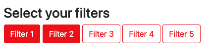

Accessible Filter Buttons Component
Requirements
- Variable number of filters
- Multiple filters can be selected at one time
- By default, no filter is selected
- Accessible and selectable via keyboard
- Screenreader should properly read the filters and selection
- An event should be dispatched when a filter is toggled
-
The component should have an API with methods to:
- Get the selected filters
- Get all the available filters
- Modify the selection programmatically
- Bonus: Possibility to "show more" and "show less" filters

Design Suggestion